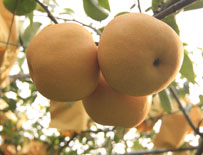
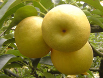
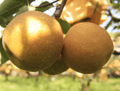

產地位於蘭陽溪上游，由於地理環境良好，
空氣清新、水質清澈，生產環境無污染，再配合蘭陽平原濕潤的氣候
，孕育了品質極佳，汁多、心細、肉甜的果肉極品
『三星上將梨』三星四寶之一，因地名與軍階中的『三星上將』
相同而得名
早晚分別吹著反向東、西風，日夜溫差大，加上豐沛雨水滋潤，
上將梨顆顆長得金黃飽滿，
「三星的雨水多，過年前開花就要趕快幫它撐傘。」
楊木生說，有雨水授粉才完整，撐起小傘，保護花粉不被雨水打落。
滿坑谷的傘海景象難見，
唯獨三星才有。
由於地理環境良好，空氣清新、水質清澈，生產環境無污染，
孕育了品質極佳，汁多、心細、肉甜
大人小孩都可以一起享用
營養價值
上將梨含水量高達89.3%，甜度11度以上。
含有醣類、蛋白質、脂肪、鈣、磷、鐵及維他命A和C等，
具有促進胃酸分秘、幫助消化和增進食欲的作用。

三星上將豐水梨：
產季6月下旬-9月上旬，口感細緻、甜度高、果膚呈現漂亮的亮黃色、
水份最多，削皮過程中梨汁會即刻溢出，可稱作是會”爆汁”的最高級梨子，
每年嫁接日本進口高等級花苞，有非常多忠實愛好的顧客。
建議尚未品嚐過美味的三星上將梨的客人，可以先購買三星上將豐水梨，
豐水梨果核小，是果汁水份豐富的高級梨，經常一試就成主顧。
每年約國曆6/25開始採收!果粒屬中、大型，肉質細緻，水份豐富，
甜度約12度，是炎夏消暑盛品

三星上將幸水梨：
產季6月中旬-7月中旬，特殊品種，甜度高、水份多、果肉細緻、有獨特果香、
口感清脆.難忘其中滋味，已品嚐三星上將豐水梨和三星上將黃金梨的饕客，
相信已經愛上同為三星蔥故鄉出產的三星上將梨。可以於6月中網站詢問，
此品種稀少，只開放少量預購，預購無法保證出貨，經常造成客人無法買到的情況
，端看各位與三星上將幸水梨的緣分。此品項數量有限，無法上架銷售，敬請見諒。
每年約國曆6/15開始採收!肉質細緻多汁，甜度約11度，有特殊的梨香風味，
屬中形果；為首批上將梨能適時嚐鮮。

三星上將黃金梨：
產季7月上旬至8月底，屬於晚梨，脆度高、甜度高、水份很多、
果肉呈現漂亮純潔白，外皮為綠底有花紋，最大特色為果膚上的天然”花紋”，
產期極短，黃金梨品種獨特，果樹照顧不易，產量不多。
品嚐過三星上將豐水梨的尊貴顧客，相信難忘細緻的口感，
可進階加購三星上將黃金梨，品嚐黃金梨的獨特美味。
每年約國曆7/15開始採收!果粒屬較大型，肉質細嫩、水分豐富、
脆度佳，甜度可達13度左右，是本園推薦品系，果皮會有鏽斑乃正常特色。